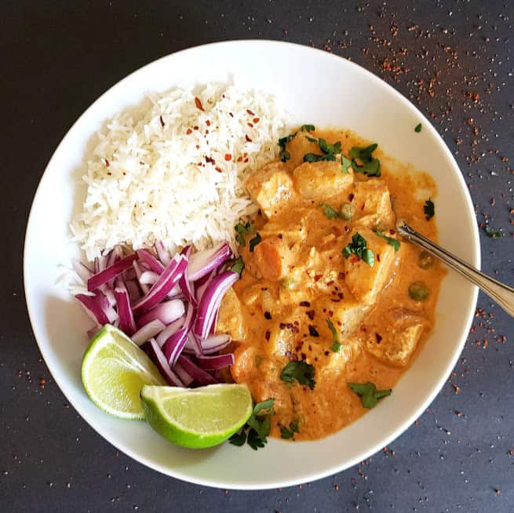

Tofu Thai Massaman Curry

Description:
Rich and creamy plant-based take on Thai Massaman Curry made with tofu, potatoes, and any vegetables of your choice
Ingrediants:
- 1 tsp Coconut Oil
- 1 Medium Onion(chopped)
- 2 Medium Potatoes
- 1 cup Firm Tofu(cubed)
- 1/2 cup Carrots(chopped)
- 1/2 cup Green Peas
- 1 tsp Minced Ginger
- 1 tsp Minced Garlic
- 2 tbsp Thai Massaman Curry Paste
- 1 tsp Raw or Brown Sugar
- 14 oz Full Fat Coconut Milk
- 1 Cup Water
- 1 tbsp Lime or Lemon Juice
- Salt & Pepper to taste
Steps:
- Heat 1 tablespoon oil in a Dutch Oven or soup pan on medium high heat.
- Once oil is hot, add chopped onions, curry paste, and minced ginger and garlic. Stir well till onions get translucent and you sense the aroma.
- Add all the veggies to the pan. Toss veggies for around 2 minutes on medium high heat.
- Add tofu cubes. Mix well. Add water and stir everything together making sure to scrape the base.
- Add coconut milk, sugar and salt. Give the mixture a good stir.
- Cover the pot and let the curry cook on medium heat for 10-12 minutes. It will come to a light simmer and become thick and creamy.
- Adjust the consistency of the curry at this point. You can add water to thin it out if you so desire.
- Add in the thai basil leaves, lime/ lemon juice, cilantro leaves and chopped green onions and mix. Remove pan from heat.
- Serve this vegan Thai Massaman Curry with jasmine rice or steamed white rice, brown rice, quinoa or noodles. Enjoy!